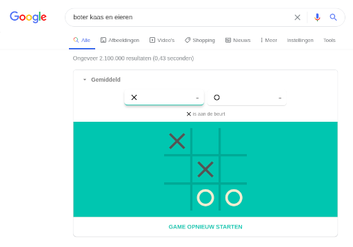
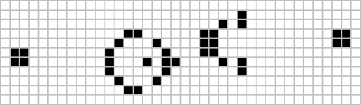
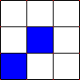
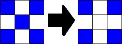
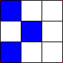

2D Arrays
Contents
2D Arrays#
Waar leeft data?
Eendimensionale arrays#
Zijn lists!
%run simulate.py
LC = [until_a_repeat(365) for _ in range(1000)]
LC[:10]
[8, 37, 24, 29, 21, 38, 36, 33, 42, 26]
sum(LC) / len(LC)
24.601
Handelingen op data#
scores = [88, 82, 91, 79, 83, 79, 86, 92, 77, 88, 93, 82, 85, 86, 92, 79]
def compute_sum(L):
sum_values = 0
for i in range(len(L)):
sum_values += L[i]
return sum_values
def compute_avg(L):
sum_list = compute_sum(L)
return sum_list / len(L)
compute_avg(scores)
85.125
Tweedimensionale arrays#
Zijn overal! (en zijn LoL’s)

Denk bijvoorbeeld aan spreadsheets …
[
["Naam", "Vraag 1", "Vraag 2", "Vraag 3", "Vraag 4"],
["Peter Been", 88, 82, 91, 79],
["Jasper Klein", 83, 79, 86, 92],
["Linda Buitendijk", 77, 88, 93, 82],
["Myrthe Zomer", 85, 86, 92, 79]
]
while True#

Of natuurlijk afbeeldingen!
[
[[255, 255, 255], [255, 255, 255]],
[[0, 0, 0], [0, 0, 0]],
[[255, 255, 255], [255, 255, 255]],
[[0, 0, 0], [0, 0, 0]]
]
Indices#

L = [
[3, 2, 6, 8],
[9, 2, 5, 7],
[0, 3, 2, 3],
[1, 2, 3, 4]
]
L[3]
[1, 2, 3, 4]
L[3][3]
4


Dit lijkt veel op hoe velden op een schaakbord worden aangegeven, maar daar worden rijen (8 tot en met 1) en kolommen (a tot en met h) anders benoemd.
Data#
string
integer / float
list
2D arrays zijn lijsten van lijsten, LoL’s
Lists#
Lists zijn containers, ze bevatten verwijzingen naar data
L = [5, 42, "hi"]

Indentiteit#
help(id)
Help on built-in function id in module builtins:
id(obj, /)
Return the identity of an object.
This is guaranteed to be unique among simultaneously existing objects.
(CPython uses the object's memory address.)
Het geheugenadres van L
id(L)
139745133217344
De geheugenadressen van de elementen van L
id(L[0]) # 5
139745186234736
id(L[1]) # 42
139745186235920
id(L[2]) # "hi"
139745184230448
Waarde en identiteit#
a = "Astronaut wordt snel oud tijdens een reis naar Mars"
b = "Astronaut wordt snel oud tijdens een reis naar Mars"
a == b
True
a is b
False
id(a)
139745134228992
id(b)
139745134228320
Verwijzingen#
by reference
Lists bevatten verwijzingen naar geheugenadressen, niet de waarden zelf!
by value
Getallen en strings verwijzen naar de waarde
Mutabiliteit#
mutable (veranderlijk)
Lists kunnen worden aangepast
immutable (onveranderlijk)
Getallen en strings kunnen niet worden aangepast
Mutable#
Lists
L = [11, 21]
id(L)
139745133238912
L[0] = 42
id(L)
139745133238912
L
[42, 21]
Immutable#
Strings en getallen
s = "hallo "
id(s)
139745133045296
s += "wereld"
id(s)
139745133412528
x = 10
id(x)
139745186234896
x += 1
id(x)
139745186234928
Functies?#
by copy
Functies ontvangen parameters als kopie
def fav(x):
print("fav VOOR: x is", id(x), "en heeft de waarde x", x)
x = "Pizza quattro formaggi"
print("fav NA: x is", id(x), "en heeft de waarde x", x)
def main():
y = "Pizza salami ananas" # bah
print("main VOOR: y is", id(y), "en heeft de waarde", y)
fav(y)
print("main NA: y is", id(y), "en heeft de waarde", y)
main()
main VOOR: y is 139745133435184 en heeft de waarde Pizza salami ananas
fav VOOR: x is 139745133435184 en heeft de waarde x Pizza salami ananas
fav NA: x is 139745133433824 en heeft de waarde x Pizza quattro formaggi
main NA: y is 139745133435184 en heeft de waarde Pizza salami ananas
Shallow versus deep copy#
De ene kopie is de andere niet!
Shallow copy#
Assignment statements in Python do not copy objects, they create bindings between a target and an object.
Wat create bindings hier betekent laten we in het midden, duidelijk is dat geen kopie wordt gecreëerd maar iets van een verwijzing die later eenvoudig te verbreken valt.
x = "regen"
y = x
x is y
True
y = "zonneschijn"
x is y
False
print("Na", x, "komt", y)
Na regen komt zonneschijn
Lists en shallow copy#
L = [5, 42, "hi"]
M = L
M[0] = 60
M[0]
60
L[0]
60
Lists zijn mutable en de shadow copy M verwijst nog steeds naar L en een aanpassing van M zal niet leiden tot een nieuwe list (zoals je wel zag gebeuren bij strings en integers).
Deep copy#
Deep copy is alleen relevant voor containertypes als lists!
A deep copy constructs a new compound object and then, recursively, inserts copies into it of the objects found in the original.
Een deep copy creëert een nieuwe container, eventuele wijzigingen zijn vervolgens alleen van toepassing op de kopie, niet het origineel.
from copy import deepcopy
L = [5, 42, "hi"]
M = deepcopy(L)
M is L
False
M[0] = 60
Wat is de waarde van L[0]?
L[0]
5
Slicing is ook diep!#
L = [5, 42, "hi"]
M = L[:]
M[0] = 60
L[0]
5
List comprehension#
List comprehension creëert een nieuwe lijst
List comprehension als strategie om mutabiliteit te vermijden!
L = [5, 42, "hi"]
M = [x for x in L]
M[0] = 60
L[0]
5
Quiz#
Vraag 1#
def conform1(fav):
fav = 42
return fav
def main1():
fav = 7
conform1(fav)
print(fav)
Wat wordt geprint voor fav in de functie main1?
Antwoord#
main1()
7
Vraag 2#
def conform2(L):
L = [42, 42]
return L
def main2():
L = [7, 11]
conform2(L)
print(L)
Wat wordt geprint voor L in de functie main2?
Antwoord#
main2()
[7, 11]
Vraag 3#
def conform3(L):
L[0] = 42
L[1] = 42
def main3():
L = [7, 11]
conform3(L)
print(L)
Wat wordt geprint voor L in de functie main3?
Antwoord#
main3()
[42, 42]
Staat#
Waarom is mutabiliteit belangrijk?
Mutabiliteit betekent dat staat kan worden gewijzigd!

Een gewijzigde staat is een probleem dat je eerder hebt gezien. Met pushr en popr kon een voorgaande staat worden bewaard om later weer terug te zetten.
Overgang van staat#
Soms is een volgende staat een logisch vervolg op de vorige staat (en is mutabiliteit ok!)

Typ “boter kaas en eieren” en speel tegen Google.
Boter kaas en eieren#
L = [
["", "", ""],
["", "", ""],
["", "", ""]
]
L[0][0] = "X"
L = [
["X", "", ""],
["", "", ""],
["", "", ""]
]
Conway’s Game of Life#

Een tweedimensionaal raster met vierkante “cellen” die “levend” of “dood” kunnen zijn, en die zich volgens vastgestelde regels ontwikkelen en daarbij allerlei patronen kunnen vormen.
Regels#

Een cel met minder dan twee levende buren sterft (vanwege isolatie)

Een cel met meer dan 3 levende buren sterft (vanwege overbevolking)

Een dode cel met precies 3 levende buren komt weer tot leven

Alle andere cellen blijven in dezelfde toestand
Patronen#

Staat#
De vorige staat is nodig om de nieuwe staat te bepalen
Mutabiliteit is hier belangrijk!